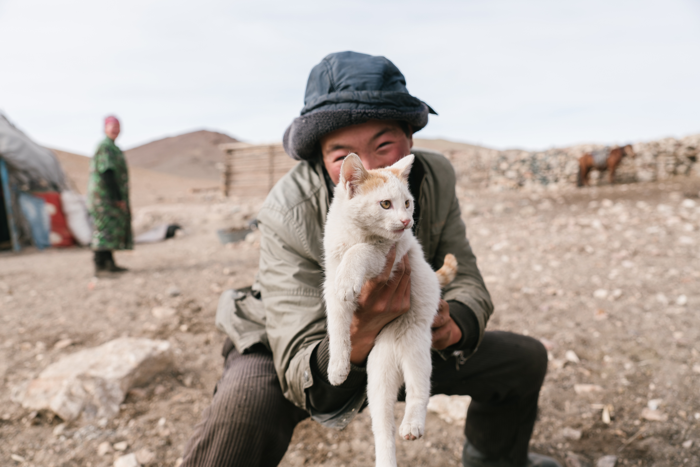

❮
❯
A traditional yurt (from the Turkic languages) or ger (Mongolian) is a portable, round tent covered with skins or felt and used as a dwelling by several distinct nomadic groups in the steppes of Central Asia. The structure consists of an angled assembly or latticework of wood or bamboo for walls, a door frame, ribs (poles, rafters), and a wheel (crown, compression ring) possibly steam-bent. The roof structure is often self-supporting, but large yurts may have interior posts supporting the crown. The top of the wall of self-supporting yurts is prevented from spreading by means of a tension band which opposes the force of the roof ribs. Modern yurts may be permanently built on a wooden platform; they may use modern materials such as steam-bent wooden framing or metal framing, canvas or tarpaulin, plexiglass dome, wire rope, or radiant insulation.
Sleeping in a yurt is a unique lodging experience allowing you to connect with nature and enjoy its sights and sounds. Native to the steppes of Central Asia and Mongolia, these homes are the quintessential glamping accommodation whether you’re after an authentic escape or a glitz and glamour getaway in Normandy. Enjoy space, comfort, warmth and style with the outdoor feel of a luxury tent and make the most of your night beneath the stars.
Many Kyrgyz people still have not abandoned their nomadic way of life and take pride in living as their ancestors have for more than a millenia now. If you ever plan on visiting Kyrgyzstan, you'll see that those 21st Century Nomads are on of the happiest people there are.